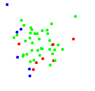

|  |
SIMPSBy Matteo Sammarco |
This is the implementation of the mobility model called SIMPS described in the paper "SIMPS: using sociology for personal mobility" by V. Borrel, F. Legendre, M. Dias de Amorim and S. Fdida. The complete paper can be found here.
Individuals in their comfort zone are green depicted, red if over, blue if under. Field size and number of people can be set only before starting the simulation, all the other parameters can be changed on the fly. For informations or comments mail to Matteo Sammarco. -->